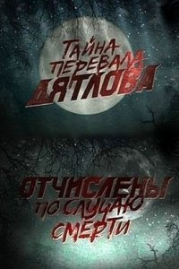

Операция «Фортуна»: Искусство побеждать
Операция «Фортуна»: Искусство побеждать Мой ужасный сосед
Мой ужасный сосед Черный ящик
Черный ящик Аферисты
Аферисты Крушение
Крушение Вавилон
Вавилон Чёрная Пантера: Ваканда навеки
Чёрная Пантера: Ваканда навеки



название
Перевал Дятлова. Отчислены по случаю смерти
год
страна
жанр
время
52 мин
Про фильм
Вслед за триллером Тайна перевала Дятлова вышел российский документальный фильм «Перевал Дятлова. Отчислены по случаю смерти», который рассказывает о странной, таинственной трагедии, произошедшей в 1959 году с группой туристов на Северном Урале. Но в отличии от художественного фильма данный фильм содержит множество достоверной информации: интервью жителей Урала, родственников погибших, опытных туристов-горнолыжников, участников поисковой группы 1959 года, интервью единственного выжившего члена группы Юрия Юдина, а так же последние фотографии, сделанные погибшими ребятами. Журналисты и съемочная группа отправляются в то самое злосчастное место, чтобы воссоздать события и разгадать загадку гибели группы Дятлова. © ГидОнлайн
Расскажи друзьям
Название
Что еще посмотреть
 Агент под прикрытием
Агент под прикрытием История
История Комментирование этого фильма доступно
Комментирование этого фильма доступно 
Кто интересуется этой темой посмотрите ни чего не потеряете. Лично я давно этим интересуюсь много статей прочитал три документальных книги и нового ни чего не узнал всё те-же догадки. В этом фильме больше клонят к причастности военных,если бы это было так на самом деле,то никто бы и следов не нашёл. Юрий Яровой по этой теме написал книгу Высшей категории трудности там расклад поинтереснее будет и про военных то-же упоминается,только они помочь хотели да было поздно. Кстати после книги он погиб и по ходу не просто так.
конечно в этом замешанны военные,люди на все готовы,чтобы их тайны не были раскрыты
Поверьте если бы спецы хотели сделать без следа, тел бы вообще не нашли, а если разыграть случайную смерть то сделали бы это аккуратно. Разок можно глянуть, но это все догадки.
Стоит посмотреть
10! очень интересно
Хватит раздувать, упала ракета с ядерной начинкой, а то, что их так раскидало – это нормально..у нас куча закрытых(читай открытых) полигонов по всей стране.
И в наше время на Алтае (не довелось бывать на Урале) подобные случаи не редкость. перевал Озерный 1998г. Лукьяненко Сергей (если не ошибаюсь) из г.Барнаул, в тумане, исчез из группы альпинистов. Так и не нашли. Памятный мемориал до сих пор висит.
боже , как же интересно что же все-таки произошло с ребятами … а так документалка не плохая … 9/10 .
Мда…СССР умело заметать следы и не кричать на каждом углу о произошедшем. Фильм супер! Лучшее из всех доков про перевал Дятлова. 10/10
Очень интересная документалка. Я считаю, что при СССР действительно было проще «убрать» нескольких попавших не в то время и место людей, чем «якобы» они при жизни могли навредить безопасности этого МОГУЧЕго госдураства.
Уникальная история. Пересмотрела все документальные фильмы посвященные этой истории.Интересно, что все-токи произошло с ребятами.
Самая тупая версия все передрались из-за девушек.
Версий в голове много, как и вопросов. Вопросов очень много.
Посмотрите фильм » Перевал Дятлова» 2012 года вроде кино. В принципе вполне может быть так, как показали в том кино, но убрав немного фантастики. На мой взгляд тут не обошлось без экспериментов безумных ученых:) или чего то похожего. Жаль ребят..
Прикольно.
Согласна что это больше всего похоже на правду
не особо впечатлил фильм ожидала большего ) но посмотреть можно
фильм мне понравился! из многочисленных версий эта больше похоже на правду
секретные материалы в российском исполнении…
У меня отец ходил на этот самый перевал. Там живет дед (манси вроде), который видел эту трагедию (ну он так говорит). Так вот, никаких пришельцев и йети. Военные проводили ракетные испытания. Ну вот и последствия)
Как-то всё сумбурно, словно сам фильм тоже цензура порезала:)) А насчёт убийства – неубедительно ни разу. Либо слишком косячная инсценировка, либо никто их не убивал. Ещё и Золотарёва в шпионаже голословно обвинили 0_о. А вообще у нас любят на публику работать и раздувать из мухи слона.
Я думаю что убили все же люди!Но скорее всего не военные,ибо зачем столько мороки если можно пулю в лоб,или еще более логично считать,что,это сделали люди из племени Манисы,что-то вроде «Вам тут нечего делать»или еще что,в этом духе,как обычно бывает.
Комуняки любили всё засекречивать. Набросали вокруг смерти (убийства) туристов домыслов и мишуры правды не увидеть.
ЗОЛОТОРЁВ всё вокруг него он причина гибели группы он не просто так там оказался и хотел подняться на гору а по другим причинам и фотоаппарат его фотографировал не то что нужно поэтому единственный фотик без плёнки был у него много доводов показывают на это и кому надо это знают
Какой бред! Кроме человека никто бы такое не сделал. Просто ребята попали не в то место и не в то время. Конечно это военные, засекреченная информация. ребята увидели то что им не надо было видеть. А возможно она и до сих пор засекреченная и никто конечно ничего не расскажет. А вы журналистам не сильно то верьте, они мастера сенсации делать. Вечная память!
я очень увлеклась этой историей и мое мнение, что ничего там паронормального не было однозначно, что там непосредственно человеческий фактор присутствует и без военных там не обошлось, хотя очень интересна версия Ракитина…Фильм не плох, во всяком случае трезво смотрят на вещи…